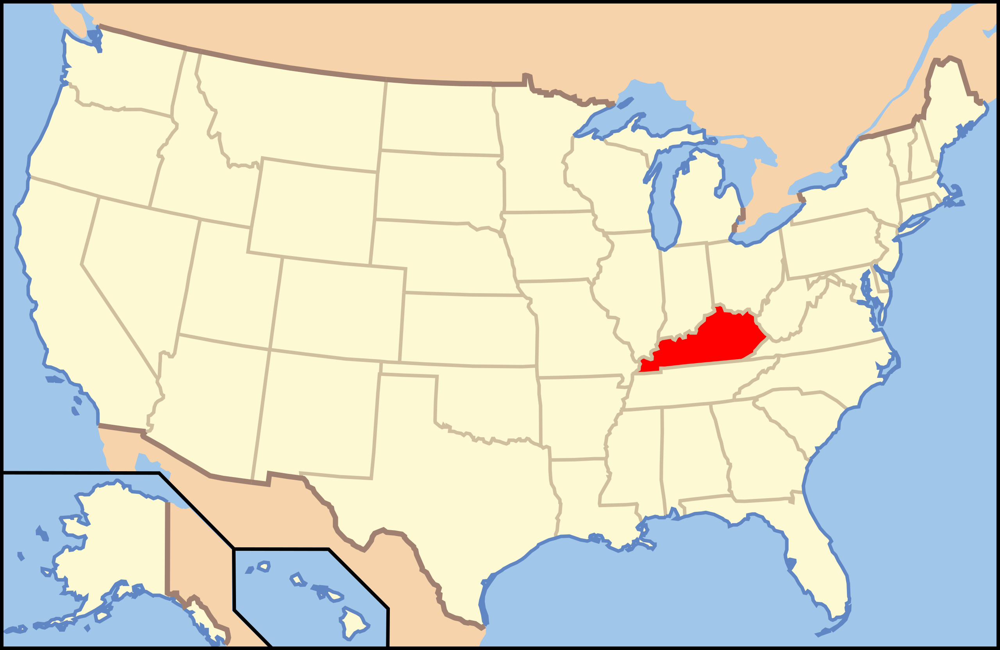

Kentucky

1. Cumberland Falls - Cumberland Falls State Resort Park

alexeyes/iStock via Getty Images Plus
| Grade: Long |
|---|
| More Images |
| Trail Link |
2. Ewing Trail Sand Cave - Cumberland Gap

Cumberland Gap National Historical Park/Facebook
| Grade: Long |
|---|
| More Images |
| Trail Link |
3. Dog Slaughter Falls - Daniel Boone National Forest

Photo Courtesy of Greg Grayson Photography
| Grade: Short |
|---|
| More Images |
| Trail Link |
4. Indian Staircase Trail - Red River Gorge

James Nicholas/Alltrails
| Grade: Moderate |
|---|
| More Images |
| Trail Link |